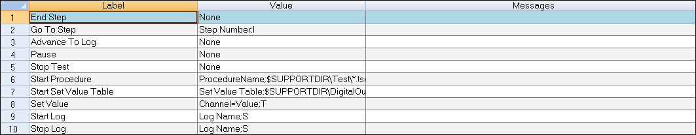
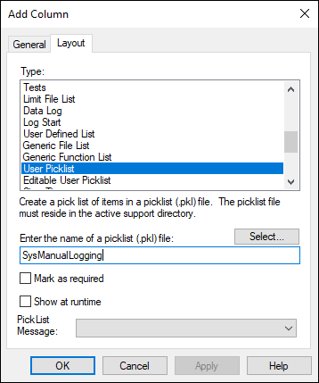
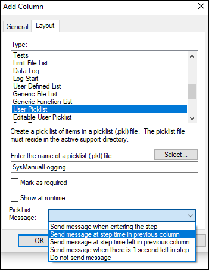
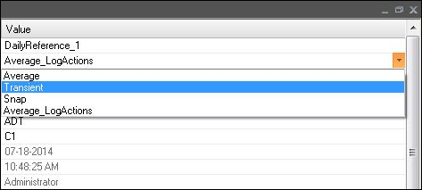

iTest User's Guide
Picklists are a simple, but very useful, component in iTest that makes it easier to manage lists of selections for the operator. These lists are used in multiple locations and this section describes how to create and use them.
A picklist is a file that contains a list of values or strings that can be used to populate drop-down fields such as within schedules, schedule headers, log header forms, FlexEdit, and combo box display objects. A picklist contains a list of values that can be paired with accompanying mailslot messages. When a user makes a selection from a picklist, the associated value then gets assigned appropriately. In some cases, a corresponding mailslot message is sent.
Picklist Example
Picklists are managed in Test Manager under the Presentation > Picklists tree node. From there, picklists can be added, duplicated, renamed and deleted in the usual way. The picklists editor appears below:
Picklist Editor

The columns for the picklist editor are defined in this table:
Picklist Columns
| Column Name | Description |
| Label | This is the text displayed for that picklist selection. This is what the operator will see. |
| Value | When a picklist item is selected, a value is often returned to some location. The location is usually an iTest channel. This column contains the value that is written to the channel when the operator selects the given label. (The value field is optional). |
| Message | In some cases, selecting a picklist label can also generate a mailslot message. This column defines the message that will automatically be sent when the operator selects this label. (The message field is optional). |
Created picklists are stored, by default, in the $SUPPORTDIR\Picklist folder as (*.pkl) files.
The ADTCombo display object allows you to reference a picklist file as an option. This will present the list of labels on the picklist. When the operator selects an item, the ADTCombo object will do the following:
Available Picklists
You can use a picklist to provide the operator with a list of options to select from when editing a schedule column or header value. There are two different ways to use the picklist. The first method is to enforce that the operator can only select one of the picklist values, and the second method is to allow the operator to either select a picklist value or manually type in a new value. The two options are:
When selecting either of these options, you must also enter the name of the picklist to use in that cell and specify how the ScheduleRunner should use the mailslot message column of the picklist. See below:
User Picklist Option

The available options for sending any mailslot message defined in the picklist are as follows:
Select Picklist Message

Picklist Message Options
| Option | Description |
| Send message when entering the step. | Sends the message when the schedule step is started. |
| Send message at step time in previous column. | Assumes column to the left of the picklist column is numeric; if the value in this column ever matches the accumulated step time for this step, the message is sent. |
| Send message at step time left in previous column. | Assumes column to the left of the picklist column is numeric; if the value in this column ever matches the step time remaining for this step, the message is sent. |
| Send message when there is 1 second left in step. | Sends the message when there is 1 second left in the schedule step. |
| Do not send message. | Does not send the message. |
 |
CAUTION: | The mailslot message option is only recognized by schedules that are being run with the RunSchedule VCL command that was introduced in iTest 3.4. Any schedules run by another method will not use the mailslot option. |
When creating a log header form, you can create a form field that references a picklist file. If you present the form with the $NewForm command, then the form will send each mailslot message as the different labels of the picklist are selected. When the operator saves, the value field will be written to the RDB and the master.ini file. However, when presenting the form with the $FlexEdit command, the mailslot messages are ignored and only the channel and INI file are updated.
iTest has a VCL function available for reading values from picklist files. The function is appropriately called picklist.
The syntax is:
SET <string chan> picklist(<picklist name> <index>)
This returns the row data associated with that index for that picklist in Label, Value, and Message form (index starts at 0). Do not include the .pkl extension in the name. Label, value, and message are returned with commas separating the field values. The function returns the string "Undefined" if the picklist file either cannot be found or if the index parameter exceeds the number of rows in the picklist.
EXAMPLE (to return the first row):
SET vsPick picklist("NewPicklist”,0)
|
CAUTION: | Picklists edited while iTestConsole is running are not re-read by the real-time system. Any calls to the picklist VCL function will return the values from when iTestConsole first started. |
DataRedStringMap is an advanced INI option that is used to get string values logged to data files with real-time determinism. In iTest, string channel updates are not done in real-time, therefore they are not deterministic.
Any user that prefers to see a string value in their data logs in addition to the real-time numeric values would use the DataRedStringMap option. This option requires a comma-separated list of channel name/picklist name pairs. The channel name and picklist are separated by a comma and each pair is separated by a semicolon. The channel name is the name of a numeric channel logged to the data file. The logged numeric value is replaced by the string value in the picklist file that corresponds to a label that matches the logged numeric value.
As an example, consider this INI entry:
DataRedStringMap=Chan1, Chan1Map.pkl;Chan2, Chan2.pkl
Where Chan1 is the logged part of a data log, and Chan1Map.pkl has three rows and appears in the file as:
1, Option 1 2, Option 2 3, Option 3
When the Chan1 column of the data log is being written, any numeric value of 1 will be written as "Option 1" instead. Any numeric value of 2 will be written as "Option 2", etc. Numeric values that are outside the range of the picklist file (e.g., greater than 3, less than 1, etc.) will be written as numeric values in the log file.
 |
NOTE: | DataRedStringMap does not use the mailslot column of picklists. |
FlexEdit is used to create operator interfaces for test preparation, allowing you to create workflows for customized testing needs.
The FlexEdit Editor is a Test Manager tool used to perform modifications to the FlexEdit application without manually editing the FlexEdit .XML file. The FlexEdit Configuration is nested within the Presentations > Picklist tree node folders in Test Manager. Here, you are able to add, duplicate, delete, and modify tasks and categories. Further configuration items must be entered by editing the .XML file. For complete details on modifying the .XML file, see the FlexEdit documentation.
FlexEdit allows you to specify a picklist when creating screens for editing .INI files. The .INI editor does not use the mailslot field of the picklist. It shows the label to the operator, and then sets the channel to the value field when the operator saves the editor.
FlexEdit Picklist
